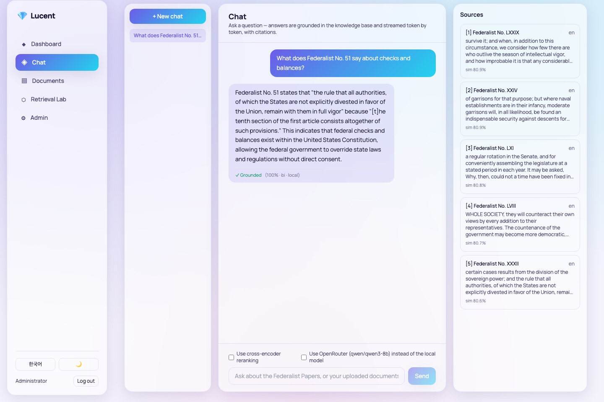
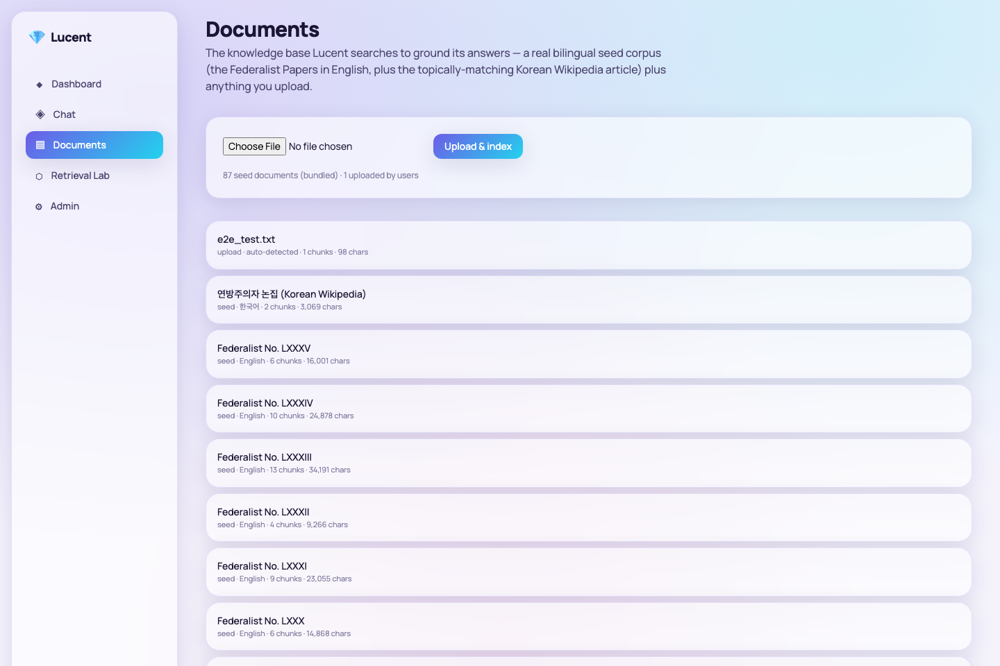
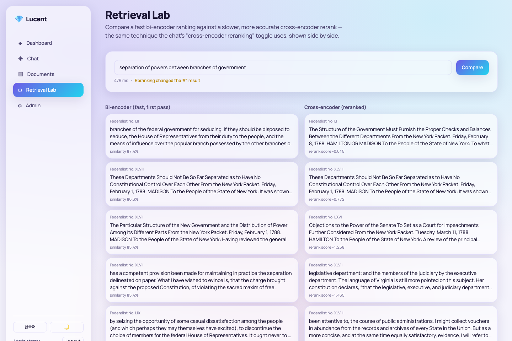
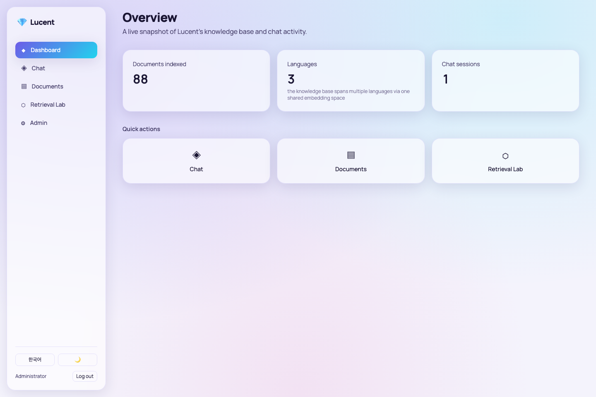
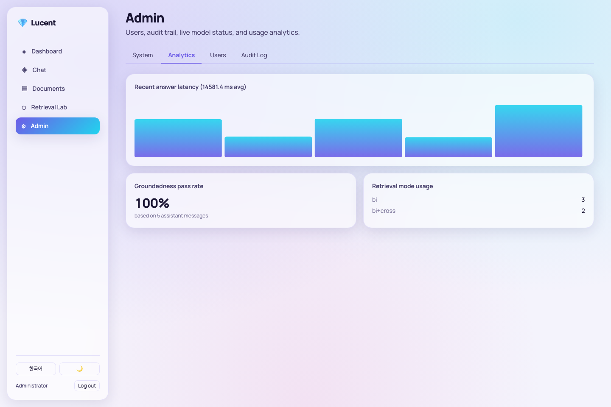
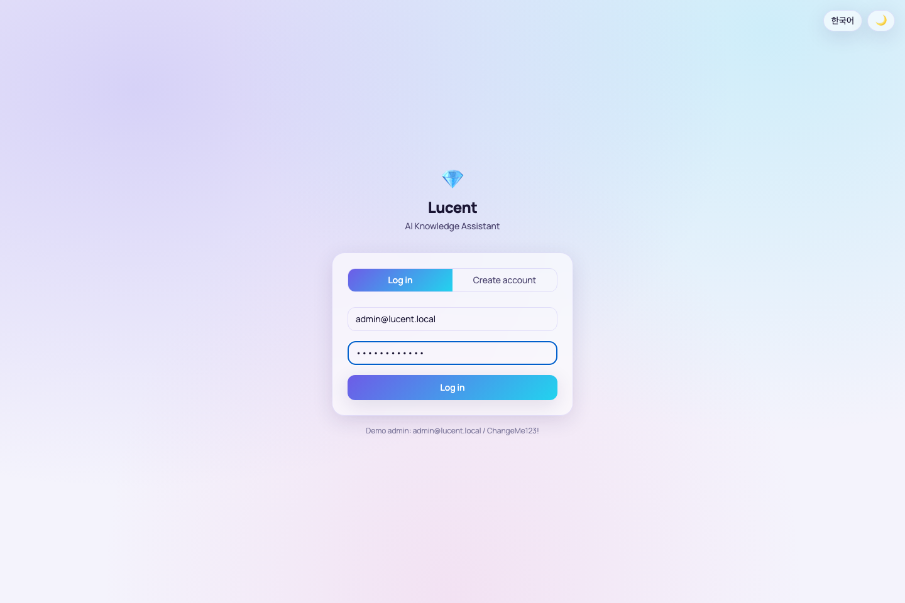
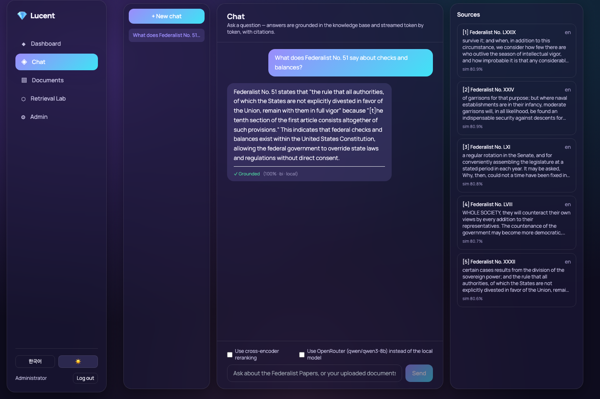

Week4 PoC · AI 지식 어시스턴트AI Knowledge Assistant
Lucent
Lucent는 Week4의 핵심 주제(임베딩, VectorDB 검색, 근거 기반 생성)를 실제 스트리밍 RAG 채팅 제품으로 완성한 PoC입니다 — 단일 질의응답이 아니라, 실시간 토큰 스트리밍·인용 표시·자동 근거검증을 갖춘 다중턴 어시스턴트입니다. Lucent turns Week4's core topic (embeddings, VectorDB retrieval, citation-grounded generation) into a real streaming RAG chat product — not a single-question search box, a multi-turn assistant with real-time token streaming, inline citations, and an automated groundedness check.
로컬 3개 + 옵션 클라우드 1개3 local + 1 optional cloud
TypeScript · Vite · Tailwind · SSE streaming
Docker Compose, 자동 포트탐색auto port-detect
4개 AI 모델The four AI models
| 모델Model | 역할Role | 위치Location |
|---|---|---|
intfloat/multilingual-e5-small | 다국어 bi-encoder 임베딩Multilingual bi-encoder embeddings | local |
cross-encoder/ms-marco-MiniLM-L-6-v2 | 재정렬(옵션)Reranking (opt-in) | local |
Qwen/Qwen2.5-0.5B-Instruct | 스트리밍 답변 생성Streaming answer generation | local |
qwen/qwen3-8b (OpenRouter)(via OpenRouter) | 스트리밍 답변 생성 업그레이드Streaming answer generation upgrade | cloud, opt-in |
세 개의 로컬 모델이 기본 경로이며 API 키 없이 항상 동작합니다. OpenRouter 경로는 사용자가 명시적으로 선택할 때만 사용되며, 이번 빌드에서 실제 키로 검증했습니다.
The three local models are always the default path and work with zero API keys. The OpenRouter path is a strictly user-toggled upgrade, validated with a real key during this build.
엔지니어링 완성도Engineering Depth
이번 요청은 "이전 차수보다 훨씬 상품 가치가 높을 것"을 명시적으로 요구했습니다. 이 표는 이 패턴의 일반적인 베이스라인 구현과 Lucent를 구체적으로 비교합니다 — 자세한 내용은 This round's request explicitly asked for a much higher product value than prior weeks. This table compares Lucent against a typical baseline implementation of this pattern concretely — full detail in architecture.md §2.
| 베이스라인Baseline | Lucent | |
|---|---|---|
| 답변 생성Answer generation | LLM 호출 없음 — 규칙기반 템플릿No LLM call — rule-based template | 실제 LLM이 스트리밍으로 합성 답변 생성Real LLM synthesizes a streamed answer |
| VectorDB | 인메모리(재시작시 초기화)In-memory (resets on restart) | PersistentClient |
| 청킹Chunking | overlap 없음No overlap | 500단어-word/50단어 overlap-word overlap |
| 대화Conversation | 단발성 질의응답Single Q&A | 다중턴 세션Multi-turn sessions |
| 근거 검증Grounding check | 없음None | 인용+유사도 이중 검증Citation + similarity dual check |
| 코퍼스Corpus | 한국어 FAQ 8건8 Korean FAQ entries | 영어 85편 + 한국어 위키(교차언어 실증)85 English essays + Korean Wikipedia (cross-lingual) |
UI 차별화UI Differentiation
Week1·2(파랑/사이드바), Week3(파치먼트/상단탭)에 이어 세 번째로 다른 시각 언어입니다 — 이번엔 "투명도"라는 명시적 요청에 따라 그라데이션 메시 배경 위에 반투명 유리 패널을 얹은 글래스모피즘을 적용했습니다.A third distinct visual language after Week1/2 (blue/sidebar) and Week3 (parchment/top-tabs) — per this round's explicit request for transparency, translucent glass panels float over a gradient mesh background.
| Week1~3 | Lucent | |
|---|---|---|
| 배경Background | 단색Solid color | 그라데이션 메시Gradient mesh |
| 카드Cards | 불투명Opaque | backdrop-blur 진짜 유리real glass |
| 폰트Font | 페어링 또는 산세리프만Pairing or sans-only | Manrope 단일, 굵기로 위계alone, weight-driven |
| 액센트Accent | 파랑/테라코타Blue/terracotta | 인디고→시안 그라데이션Indigo→cyan gradient |
| 내비게이션Navigation | 고정 사이드바/상단탭Fixed sidebar/top tabs | 떠 있는 둥근 유리 사이드바Floating rounded glass sidebar |
기능 둘러보기Feature Walkthrough
◈ 채팅Chat
질문을 입력하면 검색된 근거를 바탕으로 답변이 토큰 단위로 실시간 스트리밍되며, [n] 인용 마커를 클릭하면 우측 출처 패널의 해당 항목이 강조됩니다. 답변마다 근거 충실도 배지가 표시됩니다.Ask a question and watch the grounded answer stream in token by token; click a [n] citation to highlight its entry in the sources panel. Every answer shows a live groundedness badge.

▤ 문서Documents

⬡ 검색 실험실Retrieval Lab

📊 대시보드Dashboard

⚙ 관리자Admin

🔐 로그인Login

🌙 다크 모드Dark Mode

아키텍처Architecture
전체 시스템 다이어그램은 저장소의 The full system diagram also lives in the repository's architecture.md에도 동일하게 포함되어 있습니다..
flowchart TB
subgraph Client["Browser"]
SPA["React SPA (TypeScript / Vite / Tailwind)
Glass UI over gradient mesh"]
end
subgraph Container["Docker container — lucent"]
API["FastAPI application (Python 3.11)"]
subgraph Models["AI models"]
EMB["① multilingual-e5-small — embeddings"]
RRK["② ms-marco-MiniLM-L-6-v2 — rerank (opt-in)"]
LLM["③ Qwen2.5-0.5B — streaming generation"]
OR["④ qwen3-8b via OpenRouter (opt-in, streaming)"]
end
GROUND["Groundedness checker"]
subgraph Storage["Storage"]
SQL[("SQLite")]
VDB[("Chroma PersistentClient")]
end
API --> Models
API --> GROUND
API --> Storage
end
subgraph External["External (opt-in only)"]
ORAPI["OpenRouter API"]
end
SPA <-->|"HTTPS / JSON + JWT + streaming"| API
OR --> ORAPI
💡 다이어그램이 보이지 않는다면 인터넷 연결(Mermaid CDN)이 필요합니다. 💡 If the diagram doesn't render, it needs an internet connection (Mermaid CDN).
플로우차트Flowcharts
각 기능의 함수 단위 플로우차트는 저장소의 Per-feature, function-level flowcharts live in the repository's flowchart.md에 6개로 정리되어 있습니다. 대표로 스트리밍 채팅 파이프라인을 아래에 재현합니다. as 6 diagrams. The streaming chat pipeline is reproduced below as a representative example.
flowchart TD
A["User sends a message"] --> B["POST /api/chat/sessions/{id}/messages"]
B --> C["rag.retrieve() — embed + Chroma query + optional rerank"]
C --> D["llm.stream_generate() — local TextIteratorStreamer\nor OpenRouter SSE"]
D --> E["each fragment -> SSE 'data: {delta}' to the browser"]
E --> F["groundedness.verify(answer, sources)"]
F --> G["final SSE 'data: {done, citations, groundedness}'"]
하드웨어 최소 요구사항Minimum Hardware Requirements
| 최소Minimum | 권장Recommended | |
|---|---|---|
| RAM | 8 GB | 16 GB |
| 디스크 여유공간Free disk space | 8 GB | 12 GB |
| CPU | 4 코어cores | 8+ 코어cores |
| GPU | 불필요 — 모든 로컬 모델이 CPU에서 실행되도록 선택됨Not required — every local model was chosen to run on CPU | |
| OS | macOS / Windows (Docker Desktop) / Linux | |
측정된 실제 컨테이너 메모리, 이미지 크기, 부트스트랩 소요시간은 Measured real container memory, image size, and bootstrap timing are recorded in ../../../history/v1.0.0.md.
빠른 시작Quick Start
cd 4th_week/PoC/projects/lucent ./scripts/setup.sh # 최초 1회: 이미지 빌드, 빈 포트 탐색, 컨테이너 시작# first time: build image, find a free port, start container ./scripts/run.sh # 이후 재시작# subsequent restarts ./scripts/stop.sh # 컨테이너 정지 (삭제 아님)# stop without deleting ./scripts/verify_e2e.sh # 전체 end-to-end 검증# full end-to-end verification ./scripts/download_models.sh # (옵션) CLI로 3개 로컬 AI 모델 강제 다운로드/검증# (optional) force-download/verify all 3 local AI models via CLI ./scripts/download_data.sh # (옵션) 시드 코퍼스 강제 재색인# (optional) force-refresh the seed corpus index
데모 관리자 계정: Demo admin account: admin@lucent.local / ChangeMe123!
⚠️ Windows에서는 Git Bash 또는 WSL2에서 이 스크립트들을 실행하세요. ⚠️ On Windows, run these scripts from Git Bash or WSL2.
API 개요API Overview
FastAPI는 자동 문서를 제공합니다: 컨테이너 실행 중 FastAPI provides automatic docs — while the container is running, visit http://localhost:<port>/docs
| Endpoint | 설명Description |
|---|---|
POST /api/auth/signup · /login · GET /me | JWT 인증JWT auth |
GET /api/documents · POST /upload | 지식베이스 관리Knowledge base management |
POST /api/chat/sessions · GET /sessions/{id}/messages · POST .../messages (SSE) | 스트리밍 채팅Streaming chat |
POST /api/retrieval/compare | 검색 전략 비교Retrieval strategy comparison |
GET /api/admin/users · /audit-log · /system · /analytics | 관리자 전용Admin only |
검증Verification
모든 검수는 All verification runs via backend/verify_e2e.py를 통해 실행 중인 컨테이너에 실제 HTTP 요청을 보내 검증합니다 — 스트리밍 응답을 실제 클라이언트처럼 조립해 검증하는 것을 포함합니다. 실제 실행 결과는 — real HTTP requests against the live container, including actually assembling the streamed SSE response like a real client would, not just checking for a 200. Actual run output is recorded in ../../../history/v1.0.0.md.
데이터 & 라이선스Data & Licenses
| 데이터Data | 출처Source | 라이선스License |
|---|---|---|
| The Federalist Papers (85 편essays) | Project Gutenberg #18 | 공개 도메인Public domain |
| 연방주의자 논집 (한국어 위키백과Korean Wikipedia) | ko.wikipedia.org | CC BY-SA 4.0 |
전체 인용 정보는 Full citations are in data/SOURCES.md.
기초 지식 & 참고문헌Foundational Knowledge & References
RAG (Retrieval-Augmented Generation)
검색과 생성을 결합해, 모델의 학습 지식이 아닌 실제 검색된 문서에 근거해 답하도록 하는 기법입니다.Combines retrieval and generation so an answer is grounded in actually-retrieved documents rather than relying purely on the model's training-time knowledge. — Lewis, P. et al. "Retrieval-Augmented Generation for Knowledge-Intensive NLP Tasks." NeurIPS 2020. arxiv.org/abs/2005.11401
E5 임베딩Embeddings
Wang, L. et al. "Text Embeddings by Weakly-Supervised Contrastive Pre-training." 2022. arxiv.org/abs/2212.03533
더 자세한 모델 카드는 Fuller model cards are in ../../../etc/glossary.md
상용/클라우드 확장 시 고려사항Production & Cloud Scaling
Week1~3 PoC와 동일한 확장 패턴이 적용되며, Lucent 고유 항목으로 스트리밍 응답의 세션 어피니티/메시지 큐 처리가 추가됩니다. 자세한 내용은 Same scaling pattern as the Week1-3 PoCs, plus one Lucent-specific item: session affinity or a message-queue-backed streaming layer for load-balanced streaming responses. Full detail in architecture.md §7.
| 항목Item | 월 예상 비용Est. monthly cost |
|---|---|
| 앱 호스팅App hosting | $70–140 |
| 관리형 PostgresManaged Postgres | $60–90 |
| 벡터 DBVector DB | $0–50 |
| GPU 버스트burst | $15–30 |
| OpenRouter | $10–25 |
| 모니터링Monitoring | $0–20 |
| 합계 (참고치)Total (indicative) | ≈ $155–355 |
배포 시 고려사항Deployment Considerations
- 환경 일치·시크릿·DB 마이그레이션·CORS: Week1~3 PoC와 동일한 원칙.Environment parity, secrets, DB migration, CORS: same principles as the Week1-3 PoCs.
- 스트리밍 버퍼링 방지 (Lucent 고유): 리버스 프록시/로드밸런서가 응답을 버퍼링하지 않도록 설정해야 합니다 — 그렇지 않으면 스트리밍 답변이 다시 블로킹 응답으로 바뀝니다.Disable proxy buffering (Lucent-specific): the reverse proxy/load balancer must not buffer responses, or a streaming answer silently becomes a blocking one.
한계 & 로드맵Known Limitations & Roadmap
- 근거 충실도 검사는 문장 단위 임베딩 유사도에 기반합니다 — 문체를 바꿔 쓴 정확한 사실은 통과하지만, 유사도 임계값을 교묘히 넘는 미묘한 왜곡까지는 잡아내지 못할 수 있습니다.The groundedness check is based on sentence-level embedding similarity — it passes accurate paraphrases but may not catch subtle distortions that happen to clear the similarity threshold.
- 실측된 실제 한계: 질문에 정확한 개체 번호가 들어가면("Federalist No. 51은...") 소형 다국어 bi-encoder(
multilingual-e5-small)가 해당 문서를 상위 후보군에서 놓칠 수 있습니다 — 실제로 이 빌드에서 해당 질문에 대해 Federalist No. 51은 bi-encoder 상위 40개 후보 중 29위에 그쳤고(top_k=5 재정렬 풀 밖), 이 경우 시스템은 답을 지어내지 않고 "제공된 출처에 없다"고 올바르게 답했습니다 — 근거 없으면 모른다고 답하게 한 설계가 의도대로 작동한 사례입니다. 이 한계가 바로 검색 실험실(Retrieval Lab) 페이지가 필요한 이유입니다.A real, measured limitation: when a question names an exact entity number ("Federalist No. 51 argues..."), the small multilingual bi-encoder (multilingual-e5-small) can miss that document in the first-stage candidate pool — in this actual build, that exact question ranked Federalist No. 51 only 29th of the top-40 bi-encoder candidates (outside the top_k=5 rerank pool), and the system correctly said "not in the provided sources" rather than inventing an answer — the "say you don't know" design working as intended. This is precisely why the Retrieval Lab page exists. - Claude/Codex CLI, OpenAI, Anthropic, Gemini 경로는 설정만 되어 있고 이번 라운드에는 검증되지 않았습니다.The Claude/Codex CLI, OpenAI, Anthropic, and Gemini paths are scaffolded but not validated this round.
- 속도 제한, 이메일 인증, 비밀번호 재설정은 PoC 범위 밖입니다.Rate limiting, email verification, and password reset are out of scope for this PoC.
전체 버전 이력은 Full version history is in ../../../history/.